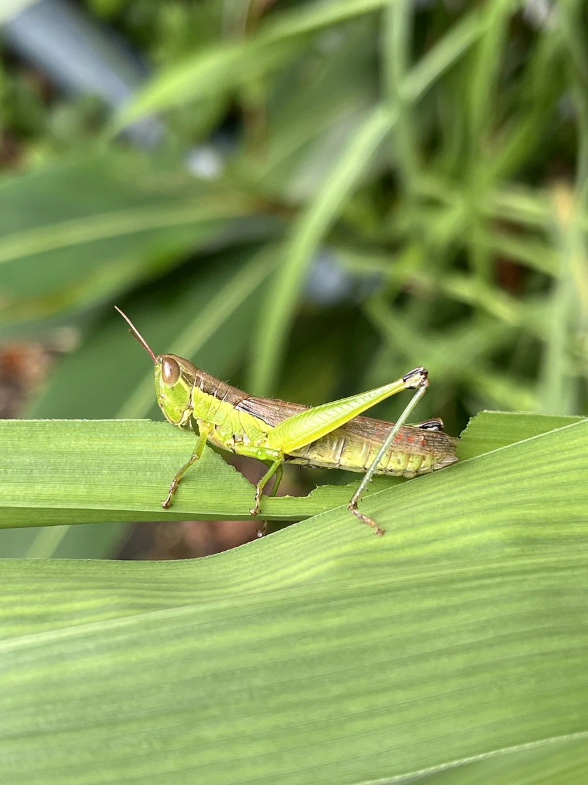

昆虫 · 动物界
中华稻蝗 Oxya chinensis

东亚稻田常见的中小型蝗虫，成虫体色黄绿至褐绿，后足发达善跳，以禾本科植物为食，是水稻害虫之一。
- 分类
- 门节肢动物门纲昆虫纲目直翅目科蝗科属稻蝗属
- 栖息环境
- 稻田、湿地、河岸草丛与灌丛，偏好禾本科植物丰富处
- 地理分布
- 东亚，中国大部分地区及日本、朝鲜半岛、东南亚北部
- 保护级别
- 暂无评估
物种志
中华稻蝗成虫体长 2.5–4.0 cm，雌虫大于雄虫。它的体色为黄绿至褐绿色，头部两侧有深色纵纹，复眼后方有一条深褐色带纹；前翅狭长，后足股节发达，善于跳跃，后足胫节有刺，用于摩擦发声和防御。
中华稻蝗分布于东亚，包括中国、日本、朝鲜半岛和东南亚部分地区，栖息于稻田、湿地、河岸草丛和灌丛。它以水稻、稗草、芦苇等禾本科植物的叶片为食，成虫和若虫都会啃食稻叶，大量发生时可造成水稻减产。中华稻蝗一年发生 1–2 代，以卵块在土中越冬，雌虫将卵产在田埂或潮湿土壤中，卵块外覆泡沫状物质。它既是农业害虫，也是蛙类、鸟类、螳螂等天敌的食物，在湿地食物链中占有一环。
形态与习性
- 食性水稻、稗草、芦苇等禾本科植物的叶片
- 体长成虫 2.5–4.0 cm，雌虫大于雄虫
- 繁殖一年 1–2 代，以卵块在土中越冬
- 后足股节发达善跳，胫节有刺
- 天敌蛙类、鸟类、螳螂等
- 农业影响大量发生时啃食稻叶造成减产
趣味知识
- 中华稻蝗是水稻的重要害虫，成虫和若虫都啃食稻叶。
- 它的一年发生 1–2 代，以卵块在土壤中越冬。
- 中华稻蝗后足发达，受惊时能跳出很远。
- 它也是蛙类、鸟类和螳螂的重要食物来源。